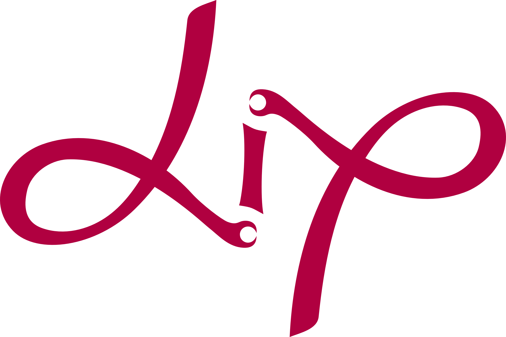

I am a post-doc at IRIF (Paris) in the Preuves, programmes et systèmes (PPS) team.
Currently, I work with Hugo Herbelin in the Malinca project around reasoning up to equivalent representations in Rocq.

Previously, in 2025, I researched on Quantum Bayesian Networks (a graphical syntax for probability theory exteneded to the quantum case) and their links with proof-nets (a graphical syntax for proofs in linear logic) with Claudia Faggian and Thomas Ehrhard, in the scope of the PEPR project EPiQ, at IRIF too.
Until the end of 2024, I was a PhD student in theoretical computer science at Ecole Normale Supérieure de Lyon in the Laboratoire de l'Informatique du Parallélisme (LIP)
My research subjets are proof theory, with a particular focus on proof-nets from linear logic, formalisation of proofs, graphical syntaxes (eg. string diagrams), and graph theory.
I am broadly interested in the question of the identity of proofs.
CV: English, Français
E-mail: remi \dot di \dot guardia \at ens-lyon \dot org OR diguardia \at irif \dot fr
Office: 4027
As my current post-doc ends soon, I am looking for a new post-doc!